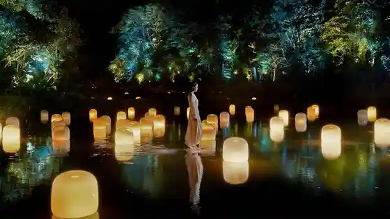
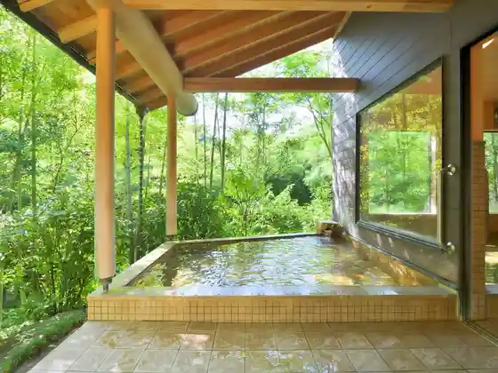
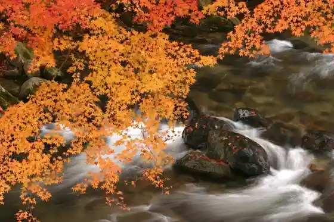
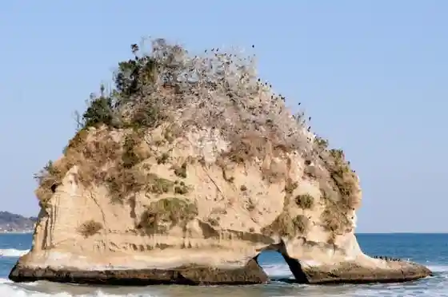

Rokkaku Do (Ibaragidaigaku Itsura Bijutsu Bunka Kenkyusho)
Kitaibaraki, Ibaraki · 0293-46-0766 · Official / source link
Chiimurabo Yukoku Onden Ato
Kitaibaraki, Ibaraki · 0293-24-5251 · Official / source link

Uguisu Tani Onsen Take no Ha
Kitaibaraki, Ibaraki · 0293-42-2288 · Official / source link

Flower Garden Gorge
Kitaibaraki, Ibaraki · 0293-43-1111 · Official / source link

Ni Tsu Shima Isohara Coast
Kitaibaraki, Ibaraki · 0293-43-1111 · Official / source link

Nakago Onsen Tori Yanse
Kitaibaraki, Ibaraki · 0293-44-0026 · Official / source link
Flower Garden Shrine
Kitaibaraki, Ibaraki · 0293-43-9212 · Official / source link
Otsu Gyokyo Chokuei Market Shokudo
Kitaibaraki, Ibaraki · 0293-30-2345 · Official / source link
Ibarakiken Tenshin Kinen Itsura Art Museum
Kitaibaraki, Ibaraki · 0293-46-5311 · Official / source link
Noguchi Ujo Memorial Museum
Kitaibaraki, Ibaraki · 0293-43-4160 · Official / source link
Itsura Misaki Park
Kitaibaraki, Ibaraki · 0293-43-1111 · Official / source link
Garasu Workshop SILICA (Shirika)
Kitaibaraki, Ibaraki · 0293-42-3550 · Official / source link
Isohara Ni Tsu Shima Beach
Kitaibaraki, Ibaraki · 0293-43-1111 · Official / source link
Ohama Maru Sakana Chikara
Kitaibaraki, Ibaraki · 0293-46-5995 · Official / source link
Toshimaya Tsukihama Baths
Kitaibaraki, Ibaraki · 0293-43-1311 · Official / source link
Otsu Minato
Kitaibaraki, Ibaraki · 0293-43-1111 · Official / source link
Kitaibaraki Ajisai Forest
Kitaibaraki, Ibaraki · 090-9107-0263 · Official / source link
Yu no Ami Onsen Shika no Yu Matsuya
Kitaibaraki, Ibaraki · 0293-46-1086 · Official / source link
Resutoran Matsuno Ya
Kitaibaraki, Ibaraki · Official / source link
Kameya Chi Marsh
Kitaibaraki, Ibaraki · 0293-43-1111 · Official / source link
Kitaibaraki Gyogyo History Museum Yo Soro
Kitaibaraki, Ibaraki · 0293-46-8600 · Official / source link
Resutoran Tsubaki
Kitaibaraki, Ibaraki · 0293-46-1111 · Official / source link
Masubuchi Sakana Sono
Kitaibaraki, Ibaraki · 0293-43-9210 · Official / source link
Maunto Akane
Kitaibaraki, Ibaraki · 0293-30-0606 · Official / source link
Kazoku Kyanpu Village Flower Garden Oto Campground
Kitaibaraki, Ibaraki · 0293-43-9277 · Official / source link
Sendo Ryori Tenshin Maru
Kitaibaraki, Ibaraki · 0293-46-7801 · Official / source link
Morimoa
Kitaibaraki, Ibaraki · 0293-46-3277 · Official / source link
Sarugashiro Gorge
Kitaibaraki, Ibaraki · 0293-43-1111 · Official / source link
Noguchi Ujo Seika Museum
Kitaibaraki, Ibaraki · 293-42-1891 · Official / source link
Onsen no Yado
Kitaibaraki, Ibaraki · 0293-46-2971 · Official / source link
Joren Tera
Kitaibaraki, Ibaraki · 0293-42-0767 · Official / source link
Shokusai Taishin
Kitaibaraki, Ibaraki · 0293-46-5511 · Official / source link
O Shokuji Tokoro Yamaguchi Ya
Kitaibaraki, Ibaraki · 0293-42-0273 · Official / source link
Ju Ishi Hori
Kitaibaraki, Ibaraki · Official / source link
Soba Dojo Sakura no
Kitaibaraki, Ibaraki · 0293-42-3306 · Official / source link
Okita Gorge
Kitaibaraki, Ibaraki · 0293-43-1111 · Official / source link
Hirakata Minato Tsuribune Ei Noboru Maru
Kitaibaraki, Ibaraki · 090-9108-9285 · Official / source link
Nature Shoku Resutoran Panpukin
Kitaibaraki, Ibaraki · 0293-42-1818 · Official / source link
Ibaraki Pashifikkukantorii Kurabu
Kitaibaraki, Ibaraki · 0293-46-4111 · Official / source link
minsyuku
Kitaibaraki, Ibaraki · 0293-46-1231 · Official / source link
Hidehisa Tsukasa
Kitaibaraki, Ibaraki · 0293-42-0671 · Official / source link
Joren Tera Gorge
Kitaibaraki, Ibaraki · 0293-43-1111 · Official / source link
Hirakata Meika Kashi Workshop
Kitaibaraki, Ibaraki · 0293-46-8730 · Official / source link
JA Ibaraki Hitachi Itsura Nosambutsu Chokubai Tokoro
Kitaibaraki, Ibaraki · 0293-46-0310 · Official / source link
JA Ibaraki Hitachi Flower Garden Saimaru Nosambutsu Chokubai Tokoro
Kitaibaraki, Ibaraki · 0293-43-9228 · Official / source link
Sushi Kappo Takasago Ya
Kitaibaraki, Ibaraki · 0293-46-0032 · Official / source link
JA Ibaraki Hitachi Kitaibaraki Chokubai Tokoro
Kitaibaraki, Ibaraki · 0293-43-6214 · Official / source link